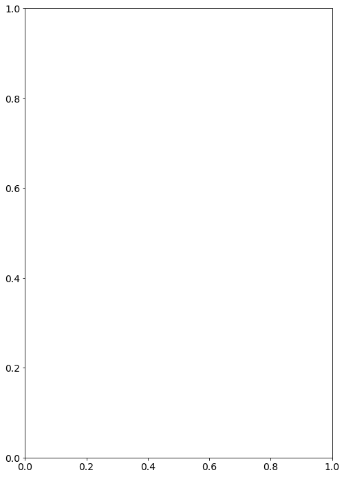
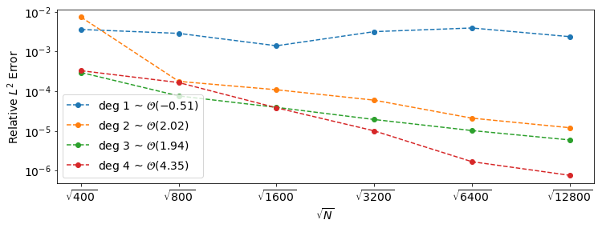
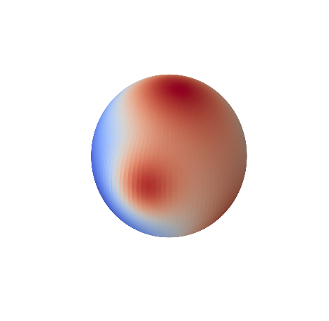

%matplotlib inline
import mpl_toolkits.mplot3d
import matplotlib.pyplot as plt
import matplotlib
matplotlib.rcParams.update({'font.size': 14})
import numpy as np
from numpy.linalg import cond, norm, inv
from scipy.spatial import cKDTree
import scipy.linalg as la
import scipy.sparse as sp
from scipy.sparse.linalg import spsolve, lsqr
import scipy.sparse.linalg as spla
from scipy.optimize import minimize_scalar
from scipy.stats import linregress as linreg
import pandas as pd
import pickle
import os.path
import warnings
warnings.simplefilter('ignore')
from poly_basis import *
from ex2_helper import *Parameters
def foo_gauss(x, sigmas, ys):
ret = 0
for sigma, y in zip(sigmas,ys):
r2 = dist(x,y)**2
ret += sigma*np.exp(-sigma*r2) * (4+r2*(-2+(-4+r2)*sigma))
return ret
def exact_gauss(x, sigmas, ys):
ret = 0
for sigma, y in zip(sigmas,ys):
ret += np.exp(-sigma*dist(x,y)**2)
return retfile_name = 'largest_epsilon'
#node_sets = ['spiral', 'sym_t_design', 'min_energy', 'max_det', 'icos']
node_sets = ['spiral']
#node_sets = ['icos']
#node_sets = ['sym_t_design']
#node_sets = ['icos']
node_set_eps = [4.265276128679313, 4.2343765867243555, 3.6870560197899263, 4.065397822527591, 2.72936075936869]
node_set_eps = node_set_eps[:len(node_sets)]
ns = [400 * 2**i for i in range(0,6)]
#ns = [50, 170, 500]
print('ns:', ns)
#rbf_labels = ['r^3', 'r^4*log(r)', 'r^5', 'r^6*log(r)', 'r^7', 'r^8*log(r)', 'r^9', 'gaussian']
#rbf_labels = ['r^6*log(r)', 'r^7', 'r^8*log(r)', 'r^9']
#rbf_labels = ['r^3', 'r^5', 'r^9', 'gaussian']
#rbf_labels = ['gaussian']
#rbf_labels = ['r^9', 'gaussian']
rbf_labels = ['r^9']
#epsilons = [1, .5, .25, .1, .05]
#epsilons = [1, .05]
#epsilons = [.1, .01, .001]
epsilons = [2.72936075936869]
#epsilons = [4, 2, 1, .5, .25]
#basis_degs = [4] # -1 for no terms
basis_degs = range(0,5) # -1 for no terms
basis_types = ['s'] * len(basis_degs) # p for polynomial and s for spherical harmonics
'''
solution_index = 20
sol_deg = sphere_harm_degs[solution_index]
foo = lambda x: sphere_harm[solution_index](*x)*sol_deg*(sol_deg+1)
exact = lambda x: sphere_harm[solution_index](*x)
print('Harmonic degree: %d' % sphere_harm_degs[solution_index])
'''
#foo, exact = foo3, exact3
#gaussian foos
sigmas = [2, .5, .3, .1, 5, 2, 1.5]
ys = np.array([ [0,0,1],
[1,-1,1],
[2,0,1],
[-5,7,0],
[2,-13,1],
[2,12,-15],
[1,0,-1]], dtype=np.float)
assert len(ys) == len(sigmas)
#project ys onto sphere
for i, y in enumerate(ys):
ys[i] = 1.0/norm(y)* y
foo = lambda x: foo_gauss(x, sigmas, ys)
exact = lambda x: exact_gauss(x, sigmas, ys)
#stencil_sizes = [7, 11, 31]
#stencil_sizes = [11, 23, 31]
#stencil_sizes = [50]
stencil_sizes = [31]
auto_choose_stencil = False
def choose_stencil_size(deg, minumum_size=11):
return max(2*(deg+1)**2, minumum_size)
calculate_weights_cond = False
calculate_stencil_conds = True
optimize_epsilon = True
target_cond = 10**12
optimize_all_stencils = True
eps_by_nodeset = True # is overridden by optimize_epsilon
calc_largest_real_eig = True
notes = ''
if eps_by_nodeset:
assert len(node_set_eps) == len(node_sets)
print('%d trials to run' % (len(ns)*len(node_sets)*len(rbf_labels)*len(basis_degs)))ns: [400, 800, 1600, 3200, 6400, 12800]
30 trials to runRBFs
rbf_dict = {}
even_tol = 1e-14
def rbf(r):
return r**3
def d_phi_dr_div_r(r):
return 3 * r
rbf_dict['r^3'] = (rbf, d_phi_dr_div_r)
def rbf(r):
if abs(r)< even_tol:
return 0
return r**4 * np.log(r)
def d_phi_dr_div_r(r):
if abs(r)< even_tol:
return 0
return r**2 * (1 + 4*np.log(r))
rbf_dict['r^4*log(r)'] = (rbf, d_phi_dr_div_r)
def rbf(r):
return r**5
def d_phi_dr_div_r(r):
return 5 * r**3
rbf_dict['r^5'] = (rbf, d_phi_dr_div_r)
def rbf(r):
if abs(r)< even_tol:
return 0
return r**6 * np.log(r)
def d_phi_dr_div_r(r):
if abs(r)< even_tol:
return 0
return r**4 * (1 + 6*np.log(r))
rbf_dict['r^6*log(r)'] = (rbf, d_phi_dr_div_r)
def rbf(r):
return r**7
def d_phi_dr_div_r(r):
return 7 * r**5
rbf_dict['r^7'] = (rbf, d_phi_dr_div_r)
def rbf(r):
if abs(r)< even_tol:
return 0
return r**8 * np.log(r)
def d_phi_dr_div_r(r):
if abs(r)< even_tol:
return 0
return r**6 * (1 + 8*np.log(r))
rbf_dict['r^8*log(r)'] = (rbf, d_phi_dr_div_r)
def rbf(r):
return r**9
def d_phi_dr_div_r(r):
return 9 * r**7
rbf_dict['r^9'] = (rbf, d_phi_dr_div_r)
# RBFs with Shape Parameter
shape_rbfs = []
def rbf(r):
return np.exp(-(epsilon*r)**2)
def d_phi_dr_div_r(r):
return -2 * epsilon**2 * np.exp(-(epsilon*r)**2)
rbf_dict['gaussian'] = (rbf, d_phi_dr_div_r)
shape_rbfs += ['gaussian']
def grad_rbf(node, node_center):
r = dist(node, node_center)
return d_phi_dr_div_r(r) * (np.array(node) - np.array(node_center))
def grad_rbf_outer(nodes, centers):
n_len = len(nodes)
c_len = len(centers)
r = dist_outer(nodes, centers)[:,:,np.newaxis]
xs = (np.array(nodes).reshape((1,n_len,3)) - np.array(centers).reshape((c_len,1,3)))
return d_phi_dr_div_r(r) * xsLoops
columns = ['node_set', 'rbf', 'epsilon', 'basis_deg', 'basis_type', 'N', 'stencil_size',
'max_error', 'rel_L2_error']
data = pd.DataFrame(columns=columns)
assert len(basis_types) == len(basis_degs)
for node_set_index, node_set in enumerate(node_sets):
#print(node_set + ' nodes')
for n_try in ns:
# generate nodes
if node_set == 'spiral':
n = n_try
nodes = gen_spiral_nodes(n)
elif node_set == 'sym_t_design':
n, nodes = gen_symmetric_t_design_nodes(n_try)
elif node_set == 'min_energy':
n, nodes = gen_min_energy_nodes(n_try)
elif node_set == 'max_det':
n, nodes = gen_max_det_nodes(n_try)
elif node_set == 'icos':
n, nodes = gen_equ_area_icos_nodes(n_try)
projectors = [np.eye(3) - np.outer(node, node) for node in nodes]
avg_val = np.sum([exact(node) for node in nodes])
print('%s nodes, n= %d' % (node_set,n))
# generate stencils
tree = cKDTree(np.array(nodes))
# generate weights
for rbf_label in rbf_labels:
print('\trbf: ' + rbf_label)
rbf, d_phi_dr_div_r = rbf_dict[rbf_label]
skip_no_epsilon = False
if optimize_epsilon:
epsilons = [1]
for epsilon in epsilons:
eps_fallback = epsilon
if skip_no_epsilon:
continue
if rbf_label not in shape_rbfs:
skip_no_epsilon = True
else:
if eps_by_nodeset:
epsilon = node_set_eps[node_set_index]
#print('\t\tepsilon changed to %f' % epsilon)
print('\t\tepsilon %f' % epsilon)
for stencil_size in stencil_sizes:
if auto_choose_stencil:
if stencil_size != stencil_sizes[0]:
continue
# skip if doing more than one stencil size
if stencil_size > n:
stencil_size = n
stencils = [tree.query(node, stencil_size)[1] for node in nodes]
print('\t\t\tstencil size: %d' % stencil_size)
for basis_deg, basis_type in zip(basis_degs, basis_types):
if calculate_stencil_conds:
largest_stencil_cond = 0
else:
largest_stencil_cond = '-'
skeel = '-'
if auto_choose_stencil:
stencil_size = choose_stencil_size(basis_deg)
stencils = [tree.query(node, stencil_size)[1] for node in nodes]
if stencil_size > n:
stencil_size = n
if auto_choose_stencil:
print('\t\t\tstencil size changed: %d' % stencil_size)
#begin inner loop
weights = np.zeros((n, stencil_size))
row_index = [r for r in range(n) for c in range(stencil_size)]
col_index = np.zeros((n, stencil_size))
for i, stencil in enumerate(stencils):
col_index[i] = stencil
nn = np.array([nodes[i] for i in stencil])
nn_proj = np.array([projectors[i] for i in stencil])
center_x, center_y, center_z = nn[0]
if basis_type == 'p':
P, rhs_x, rhs_y, rhs_z = get_poly_basis(basis_deg, nn, nn_proj)
elif basis_type == 's':
P, rhs_x, rhs_y, rhs_z = gen_sphere_harm_basis(basis_deg, nn, nn_proj)
if optimize_epsilon and (i==0 or optimize_all_stencils) and not skip_no_epsilon:
# optimize cond for first stencil
#dist_mat = np.array([[dist(node, node_center)
# for node in nn] for node_center in nn])
dist_mat = dist_outer(nn,nn)
optimization_result = minimize_scalar(root_find, args=(dist_mat, P, target_cond))
epsilon = optimization_result['x']
# test if good
A = rbf(dist_outer(nn, nn))
num_basis = P.shape[1]
AP = np.block([[A,P],[P.T, np.zeros((num_basis,num_basis))]])
if cond(AP) > 10**16:
optimization_result = minimize_scalar(root_find,
bracket=[np.sqrt(n)/16/2, np.sqrt(n)/16*2],
args=(dist_mat, P, target_cond))
if optimization_result['success']:
epsilon = optimization_result['x']
eps_fallback = eps_fallback
else:
epsilon = eps_fallback
if i==0:
print(print('\t\tepsilon %f' % epsilon))
A = rbf(dist_outer(nn, nn))
#P = np.array([[1, x-center_x, y-center_y, z-center_z] for x,y,z in nn])
#P, rhs_x, rhs_y, rhs_z = get_poly_basis(basis_deg, nn, nn_proj)
num_basis = P.shape[1]
AP = np.block([[A,P],[P.T, np.zeros((num_basis,num_basis))]])
if calculate_stencil_conds:
my_cond = cond(AP)
if i==0:
skeel = skeel_cond(AP)
if my_cond > largest_stencil_cond:
largest_stencil_cond = my_cond
#rhsAs = np.array([ [ nn_proj[j]@grad_rbf(node, node_center)
# for j, node in enumerate(nn) ]
# for node_center in nn] )
#rhsAs = np.matmul(nn_proj,
# np.array([[grad_rbf(node, node_center) for node in nn]
# for node_center in nn]).reshape((50,50,3,1))).reshape((50,50,3))
rhsAs = np.matmul(nn_proj,
grad_rbf_outer(nn, nn).reshape(
(stencil_size,stencil_size,3,1))).reshape(
(stencil_size,stencil_size,3))
singular_stencil = False
try:
rhsA = rhsAs[:,:,0] # only the x coordinates
rhs = np.block([[rhsA],
[rhs_x]])
weights_grad = la.solve(AP, rhs)[:stencil_size,:].T
weights[i] = (weights_grad@weights_grad)[0]
rhsA = rhsAs[:,:,1] # only the y coordinates
rhs = np.block([[rhsA],
[rhs_y]])
weights_grad = la.solve(AP, rhs)[:stencil_size,:].T
weights[i] += (weights_grad@weights_grad)[0]
rhsA = rhsAs[:,:,2] # only the z coordinates
rhs = np.block([[rhsA],
[rhs_z]])
weights_grad = la.solve(AP, rhs)[:stencil_size,:].T
weights[i] += (weights_grad@weights_grad)[0]
except la.LinAlgError:
print('Singular stencil, skipping case.')
singular_stencil = True
if singular_stencil:
continue
C = sp.csc_matrix((weights.ravel(), (row_index, col_index.ravel())),shape=(n,n))
# solve steady-state
C = sp.vstack( [sp.hstack([C, np.ones((n,1))], format='csr'),
np.block([np.ones((1,n)), np.zeros((1,1))]) ], format='csr')
rhs = [-foo(node) for node in nodes] + [avg_val]
if calculate_weights_cond:
weights_cond = cond(C.todense())
else:
weights_cond = '-'
if calc_largest_real_eig:
try:
largest_real_eigenvalue = spla.eigs(C, k=1, which='LR')[0][0]
except spla.ArpackNoConvergence:
largest_real_eigenvalue = np.NaN
else:
largest_real_eigenvalue = '-'
u = spsolve(C, rhs)
u = u[:-1]
u_true = np.array([exact(node) for node in nodes])
data = data.append(
{'node_set': node_set, 'rbf':rbf_label, 'epsilon': epsilon,
'basis_deg':np.int(basis_deg), 'basis_type' : basis_type,
'N':n, 'stencil_size':stencil_size,
'max_error':np.max( np.abs(u-u_true ) ),
'rel_L2_error':la.norm(u-u_true)/la.norm(u_true),
'stencil_cond': largest_stencil_cond,
'skeel_cond' : skeel,
'weights_cond': weights_cond,
'target_cond' : target_cond,
'largest_re_eig': largest_real_eigenvalue}, ignore_index=True)spiral nodes, n= 400
rbf: r^9
stencil size: 31
spiral nodes, n= 800
rbf: r^9
stencil size: 31
spiral nodes, n= 1600
rbf: r^9
stencil size: 31
spiral nodes, n= 3200
rbf: r^9
stencil size: 31
spiral nodes, n= 6400
rbf: r^9
stencil size: 31
spiral nodes, n= 12800
rbf: r^9
stencil size: 31display(data[:10])| node_set | rbf | epsilon | basis_deg | basis_type | N | stencil_size | max_error | rel_L2_error | largest_re_eig | skeel_cond | stencil_cond | target_cond | weights_cond | |
|---|---|---|---|---|---|---|---|---|---|---|---|---|---|---|
| 0 | spiral | r^9 | 1 | 0 | s | 400 | 31 | 0.815737 | 0.100695 | NaN | 2.405759e+05 | 4.498485e+10 | 1.000000e+12 | - |
| 1 | spiral | r^9 | 1 | 1 | s | 400 | 31 | 0.018575 | 0.003578 | (20.000000000000064+0j) | 2.952575e+05 | 1.952060e+06 | 1.000000e+12 | - |
| 2 | spiral | r^9 | 1 | 2 | s | 400 | 31 | 0.083748 | 0.007310 | (709.1194912957786+0j) | 2.790667e+05 | 1.623946e+07 | 1.000000e+12 | - |
| 3 | spiral | r^9 | 1 | 3 | s | 400 | 31 | 0.002979 | 0.000296 | (20.000000000000007+0j) | 4.189027e+05 | 2.330335e+06 | 1.000000e+12 | - |
| 4 | spiral | r^9 | 1 | 4 | s | 400 | 31 | 0.003300 | 0.000328 | (20.000000000000025+0j) | 6.089942e+05 | 5.973643e+06 | 1.000000e+12 | - |
| 5 | spiral | r^9 | 1 | 0 | s | 800 | 31 | 25.935671 | 2.974178 | (3536.250641998632+0j) | 5.994467e+06 | 7.263247e+08 | 1.000000e+12 | - |
| 6 | spiral | r^9 | 1 | 1 | s | 800 | 31 | 0.016245 | 0.002854 | (28.284271247461938+0j) | 6.854431e+06 | 5.159030e+07 | 1.000000e+12 | - |
| 7 | spiral | r^9 | 1 | 2 | s | 800 | 31 | 0.001513 | 0.000177 | (28.28427124746198+0j) | 8.753154e+06 | 7.018496e+07 | 1.000000e+12 | - |
| 8 | spiral | r^9 | 1 | 3 | s | 800 | 31 | 0.000686 | 0.000076 | (28.28427124746197+0j) | 9.163802e+06 | 6.013061e+07 | 1.000000e+12 | - |
| 9 | spiral | r^9 | 1 | 4 | s | 800 | 31 | 0.001557 | 0.000165 | (28.284271247461934+0j) | 1.475900e+07 | 8.830135e+07 | 1.000000e+12 | - |
phs_data = read_data[read_data.rbf!='gaussian']my_data = datadisplay(my_data)| node_set | rbf | epsilon | basis_deg | basis_type | N | stencil_size | max_error | rel_L2_error | largest_re_eig | skeel_cond | stencil_cond | target_cond | weights_cond | |
|---|---|---|---|---|---|---|---|---|---|---|---|---|---|---|
| 0 | spiral | gaussian | 4.265276 | -1 | s | 400 | 50 | 3.136836 | 0.599750 | 235.751091 | - | - | 1.000000e+12 | - |
| 1 | spiral | gaussian | 4.265276 | -1 | s | 800 | 50 | 3.660251 | 0.621926 | 531.757438 | - | - | 1.000000e+12 | - |
| 2 | spiral | gaussian | 4.265276 | -1 | s | 1600 | 50 | 0.145499 | 0.021181 | 1345.498242 | - | - | 1.000000e+12 | - |
| 3 | spiral | gaussian | 4.265276 | -1 | s | 3200 | 50 | 0.030619 | 0.006703 | 2868.326889 | - | - | 1.000000e+12 | - |
| 4 | spiral | gaussian | 4.265276 | -1 | s | 6400 | 50 | 0.004431 | 0.000959 | NaN | - | - | 1.000000e+12 | - |
display(eps_data)| node_set | rbf | epsilon | basis_deg | basis_type | N | stencil_size | max_error | rel_L2_error | skeel_cond | stencil_cond | target_cond | weights_cond | |
|---|---|---|---|---|---|---|---|---|---|---|---|---|---|
| 0 | spiral | gaussian | 4.265276 | -1 | s | 6400 | 50 | 0.008425 | 0.001816 | - | - | 1.000000e+12 | - |
| 0 | sym_t_design | gaussian | 4.234377 | -1 | s | 6386 | 50 | 0.001290 | 0.000214 | - | - | 1.000000e+12 | - |
| 0 | min_energy | gaussian | 3.687056 | -1 | s | 4666 | 50 | 0.000506 | 0.000125 | - | - | 1.000000e+12 | - |
| 0 | max_det | gaussian | 4.065398 | -1 | s | 6400 | 50 | 0.000524 | 0.000123 | - | - | 1.000000e+12 | - |
| 0 | icos | gaussian | 2.729361 | -1 | s | 2562 | 50 | 0.000289 | 0.000065 | - | - | 1.000000e+12 | - |
print(eps_data[eps_data.node_set=='icos'].epsilon[0])2.72936075936869data = my_datadisplay(data[:10])
display(read_data[:10])| node_set | rbf | epsilon | basis_deg | basis_type | N | stencil_size | max_error | rel_L2_error | largest_re_eig | skeel_cond | stencil_cond | target_cond | weights_cond | |
|---|---|---|---|---|---|---|---|---|---|---|---|---|---|---|
| 0 | spiral | gaussian | 4.265276 | -1 | s | 400 | 50 | 3.136836 | 0.599750 | (22.043111319892585+0j) | 25.858148 | 1.900501e+02 | 1.000000e+12 | - |
| 1 | spiral | gaussian | 4.265276 | 0 | s | 400 | 50 | 0.423124 | 0.097418 | (20.000000000000043+0j) | 66.872996 | 3.787712e+02 | 1.000000e+12 | - |
| 2 | spiral | gaussian | 4.265276 | 1 | s | 400 | 50 | 0.652823 | 0.132416 | (20.000000000000085+0j) | 66.753858 | 3.814458e+02 | 1.000000e+12 | - |
| 3 | spiral | gaussian | 4.265276 | 2 | s | 400 | 50 | 0.082404 | 0.013220 | (20.000000000000078+0j) | 88.072555 | 5.711332e+03 | 1.000000e+12 | - |
| 4 | spiral | gaussian | 4.265276 | 3 | s | 400 | 50 | 0.039215 | 0.006531 | (20.000000000000046+0j) | 9485.980888 | 1.489774e+06 | 1.000000e+12 | - |
| 5 | spiral | gaussian | 4.265276 | -1 | s | 800 | 50 | 3.660251 | 0.621926 | (28.736512636939835+0j) | 1535.902188 | 3.335842e+04 | 1.000000e+12 | - |
| 6 | spiral | gaussian | 4.265276 | 0 | s | 800 | 50 | 0.101526 | 0.016089 | (28.28427124746207+0j) | 3142.780458 | 4.697809e+04 | 1.000000e+12 | - |
| 7 | spiral | gaussian | 4.265276 | 1 | s | 800 | 50 | 0.143470 | 0.026254 | (28.28427124746203+0j) | 3140.616233 | 4.555715e+04 | 1.000000e+12 | - |
| 8 | spiral | gaussian | 4.265276 | 2 | s | 800 | 50 | 0.023330 | 0.004164 | (28.284271247461916+0j) | 3011.521539 | 4.558214e+04 | 1.000000e+12 | - |
| 9 | spiral | gaussian | 4.265276 | 3 | s | 800 | 50 | 0.017633 | 0.002489 | (28.284271247461938+0j) | 16485.692304 | 1.247701e+07 | 1.000000e+12 | - |
| node_set | rbf | epsilon | basis_deg | basis_type | N | stencil_size | max_error | rel_L2_error | largest_re_eig | skeel_cond | stencil_cond | target_cond | weights_cond | label | |
|---|---|---|---|---|---|---|---|---|---|---|---|---|---|---|---|
| 0 | spiral | r^9 | 2.729361 | -1 | s | 400 | 50 | 0.222641 | 0.053221 | (20.201926745482865+0j) | 6.277511e+05 | 2.008237e+07 | 1.000000e+12 | - | r^9 2.72936075936869 |
| 1 | spiral | r^9 | 2.729361 | 0 | s | 400 | 50 | 0.006746 | 0.001223 | (20.00000000000003+0j) | 9.951886e+05 | 2.067941e+07 | 1.000000e+12 | - | r^9 2.72936075936869 |
| 2 | spiral | r^9 | 2.729361 | 1 | s | 400 | 50 | 0.002098 | 0.000321 | (20.00000000000006+0j) | 1.029225e+06 | 2.099665e+07 | 1.000000e+12 | - | r^9 2.72936075936869 |
| 3 | spiral | r^9 | 2.729361 | 2 | s | 400 | 50 | 0.061796 | 0.005534 | (97627.29659256009+0j) | 8.078985e+05 | 9.082821e+09 | 1.000000e+12 | - | r^9 2.72936075936869 |
| 4 | spiral | r^9 | 2.729361 | 3 | s | 400 | 50 | 0.002631 | 0.000317 | (20.00000000000006+0j) | 1.001088e+06 | 2.101831e+07 | 1.000000e+12 | - | r^9 2.72936075936869 |
| 5 | spiral | r^9 | 2.729361 | -1 | s | 800 | 50 | 0.491060 | 0.113182 | (28.652530551861787+0j) | 6.385740e+05 | 4.067341e+07 | 1.000000e+12 | - | r^9 2.72936075936869 |
| 6 | spiral | r^9 | 2.729361 | 0 | s | 800 | 50 | 0.007739 | 0.001344 | (28.284271247462016+0j) | 2.311147e+07 | 1.557191e+08 | 1.000000e+12 | - | r^9 2.72936075936869 |
| 7 | spiral | r^9 | 2.729361 | 1 | s | 800 | 50 | 0.000692 | 0.000082 | (28.28427124746206+0j) | 2.504364e+07 | 1.627903e+08 | 1.000000e+12 | - | r^9 2.72936075936869 |
| 8 | spiral | r^9 | 2.729361 | 2 | s | 800 | 50 | 0.000625 | 0.000101 | (28.284271247462065+0j) | 2.548113e+07 | 1.850372e+08 | 1.000000e+12 | - | r^9 2.72936075936869 |
| 9 | spiral | r^9 | 2.729361 | 3 | s | 800 | 50 | 0.000580 | 0.000074 | (28.28427124746201+0j) | 2.554704e+07 | 1.887481e+08 | 1.000000e+12 | - | r^9 2.72936075936869 |
my_data = pd.concat([read_data, data])display(my_data)| N | basis_deg | basis_type | epsilon | label | largest_re_eig | max_error | node_set | rbf | rel_L2_error | skeel_cond | stencil_cond | stencil_size | target_cond | weights_cond | |
|---|---|---|---|---|---|---|---|---|---|---|---|---|---|---|---|
| 0 | 400 | -1 | s | 2.729361 | r^9 2.72936075936869 | (20.201926745482865+0j) | 2.226407e-01 | spiral | r^9 | 5.322054e-02 | 6.277511e+05 | 2.008237e+07 | 50 | 1.000000e+12 | - |
| 1 | 400 | 0 | s | 2.729361 | r^9 2.72936075936869 | (20.00000000000003+0j) | 6.745954e-03 | spiral | r^9 | 1.223059e-03 | 9.951886e+05 | 2.067941e+07 | 50 | 1.000000e+12 | - |
| 2 | 400 | 1 | s | 2.729361 | r^9 2.72936075936869 | (20.00000000000006+0j) | 2.098179e-03 | spiral | r^9 | 3.205939e-04 | 1.029225e+06 | 2.099665e+07 | 50 | 1.000000e+12 | - |
| 3 | 400 | 2 | s | 2.729361 | r^9 2.72936075936869 | (97627.29659256009+0j) | 6.179576e-02 | spiral | r^9 | 5.533702e-03 | 8.078985e+05 | 9.082821e+09 | 50 | 1.000000e+12 | - |
| 4 | 400 | 3 | s | 2.729361 | r^9 2.72936075936869 | (20.00000000000006+0j) | 2.631390e-03 | spiral | r^9 | 3.170634e-04 | 1.001088e+06 | 2.101831e+07 | 50 | 1.000000e+12 | - |
| 5 | 800 | -1 | s | 2.729361 | r^9 2.72936075936869 | (28.652530551861787+0j) | 4.910600e-01 | spiral | r^9 | 1.131820e-01 | 6.385740e+05 | 4.067341e+07 | 50 | 1.000000e+12 | - |
| 6 | 800 | 0 | s | 2.729361 | r^9 2.72936075936869 | (28.284271247462016+0j) | 7.739000e-03 | spiral | r^9 | 1.344445e-03 | 2.311147e+07 | 1.557191e+08 | 50 | 1.000000e+12 | - |
| 7 | 800 | 1 | s | 2.729361 | r^9 2.72936075936869 | (28.28427124746206+0j) | 6.922966e-04 | spiral | r^9 | 8.200344e-05 | 2.504364e+07 | 1.627903e+08 | 50 | 1.000000e+12 | - |
| 8 | 800 | 2 | s | 2.729361 | r^9 2.72936075936869 | (28.284271247462065+0j) | 6.245828e-04 | spiral | r^9 | 1.013944e-04 | 2.548113e+07 | 1.850372e+08 | 50 | 1.000000e+12 | - |
| 9 | 800 | 3 | s | 2.729361 | r^9 2.72936075936869 | (28.28427124746201+0j) | 5.798617e-04 | spiral | r^9 | 7.408190e-05 | 2.554704e+07 | 1.887481e+08 | 50 | 1.000000e+12 | - |
| 10 | 1600 | -1 | s | 2.729361 | r^9 2.72936075936869 | (40.43491864742199+0j) | 1.523661e+00 | spiral | r^9 | 2.305938e-01 | 6.894991e+05 | 5.874060e+07 | 50 | 1.000000e+12 | - |
| 11 | 1600 | 0 | s | 2.729361 | r^9 2.72936075936869 | (39.999999999999986+0j) | 1.043207e-02 | spiral | r^9 | 1.578012e-03 | 5.330006e+08 | 3.897065e+09 | 50 | 1.000000e+12 | - |
| 12 | 1600 | 1 | s | 2.729361 | r^9 2.72936075936869 | (40.000000000000114+0j) | 1.147190e-03 | spiral | r^9 | 2.380735e-04 | 5.806141e+08 | 4.262326e+09 | 50 | 1.000000e+12 | - |
| 13 | 1600 | 2 | s | 2.729361 | r^9 2.72936075936869 | (40.00000000000008+0j) | 7.589016e-04 | spiral | r^9 | 1.276038e-04 | 7.915049e+08 | 1.220466e+10 | 50 | 1.000000e+12 | - |
| 14 | 1600 | 3 | s | 2.729361 | r^9 2.72936075936869 | (40.000000000000114+0j) | 2.125350e-04 | spiral | r^9 | 2.511516e-05 | 5.887173e+08 | 4.894289e+09 | 50 | 1.000000e+12 | - |
| 15 | 3200 | -1 | s | 2.729361 | r^9 2.72936075936869 | (57.79886667283009+0j) | 7.932875e+00 | spiral | r^9 | 1.920883e+00 | 7.151433e+05 | 5.785113e+07 | 50 | 1.000000e+12 | - |
| 16 | 3200 | 0 | s | 2.729361 | r^9 2.72936075936869 | (56.56854249492412+0j) | 1.020138e-02 | spiral | r^9 | 1.697291e-03 | 1.217284e+10 | 8.187952e+10 | 50 | 1.000000e+12 | - |
| 17 | 3200 | 1 | s | 2.729361 | r^9 2.72936075936869 | (56.56854249492402+0j) | 9.631868e-04 | spiral | r^9 | 1.853655e-04 | 1.324362e+10 | 8.785685e+10 | 50 | 1.000000e+12 | - |
| 18 | 3200 | 2 | s | 2.729361 | r^9 2.72936075936869 | (56.568542494923655+0j) | 8.660629e-05 | spiral | r^9 | 1.164459e-05 | 1.370395e+10 | 1.063007e+11 | 50 | 1.000000e+12 | - |
| 19 | 3200 | 3 | s | 2.729361 | r^9 2.72936075936869 | (56.568542494923804+0j) | 4.226279e-05 | spiral | r^9 | 4.605711e-06 | 1.349173e+10 | 1.065115e+11 | 50 | 1.000000e+12 | - |
| 20 | 6400 | -1 | s | 2.729361 | r^9 2.72936075936869 | (83.01553224377037+0j) | 3.604347e+00 | spiral | r^9 | 7.777775e-01 | 7.280050e+05 | 6.596892e+07 | 50 | 1.000000e+12 | - |
| 21 | 6400 | 0 | s | 2.729361 | r^9 2.72936075936869 | (80+0j) | 9.612840e-03 | spiral | r^9 | 1.405480e-03 | 2.767045e+11 | 2.014946e+12 | 50 | 1.000000e+12 | - |
| 22 | 6400 | 1 | s | 2.729361 | r^9 2.72936075936869 | (80.00000000000007+0j) | 4.772242e-04 | spiral | r^9 | 1.017060e-04 | 3.006807e+11 | 2.199332e+12 | 50 | 1.000000e+12 | - |
| 23 | 6400 | 2 | s | 2.729361 | r^9 2.72936075936869 | (80.00000000000045+0j) | 6.495653e-05 | spiral | r^9 | 1.188743e-05 | 3.092239e+11 | 2.712154e+12 | 50 | 1.000000e+12 | - |
| 24 | 6400 | 3 | s | 2.729361 | r^9 2.72936075936869 | (79.99999999999987+0j) | 2.496153e-05 | spiral | r^9 | 3.040632e-06 | 3.072666e+11 | 2.698982e+12 | 50 | 1.000000e+12 | - |
| 25 | 393 | -1 | s | 2.729361 | r^9 2.72936075936869 | (20.034606298109495+0j) | 3.222370e-01 | sym_t_design | r^9 | 7.708175e-02 | 1.876694e+06 | 2.823746e+07 | 50 | 1.000000e+12 | - |
| 26 | 393 | 0 | s | 2.729361 | r^9 2.72936075936869 | (19.824227601598977+0j) | 1.008680e-02 | sym_t_design | r^9 | 1.932541e-03 | 1.909477e+06 | 2.989540e+07 | 50 | 1.000000e+12 | - |
| 27 | 393 | 1 | s | 2.729361 | r^9 2.72936075936869 | (19.824227601598988+0j) | 3.570107e-03 | sym_t_design | r^9 | 7.283936e-04 | 2.009882e+06 | 3.083174e+07 | 50 | 1.000000e+12 | - |
| 28 | 393 | 2 | s | 2.729361 | r^9 2.72936075936869 | (1446.6380504293247+0j) | 4.337433e-01 | sym_t_design | r^9 | 4.251930e-02 | 2.134597e+06 | 1.224772e+09 | 50 | 1.000000e+12 | - |
| 29 | 393 | 3 | s | 2.729361 | r^9 2.72936075936869 | (19.824227601599056+0j) | 2.371964e-03 | sym_t_design | r^9 | 3.906488e-04 | 1.665208e+06 | 3.091253e+07 | 50 | 1.000000e+12 | - |
| ... | ... | ... | ... | ... | ... | ... | ... | ... | ... | ... | ... | ... | ... | ... | ... |
| 95 | 6400 | -1 | s | 4.065398 | NaN | (80.00068947163552+0j) | 4.982763e-04 | max_det | gaussian | 1.152505e-04 | 5.283593e+10 | 3.628535e+12 | 50 | 1.000000e+12 | - |
| 96 | 6400 | 0 | s | 4.065398 | NaN | (79.99999999999937+0j) | 3.711206e-05 | max_det | gaussian | 8.821937e-06 | 5.855478e+10 | 3.781883e+12 | 50 | 1.000000e+12 | - |
| 97 | 6400 | 1 | s | 4.065398 | NaN | (79.99999999999987+0j) | 2.663758e-06 | max_det | gaussian | 2.624061e-07 | 5.680875e+10 | 3.577083e+12 | 50 | 1.000000e+12 | - |
| 98 | 6400 | 2 | s | 4.065398 | NaN | (80.0000000000003+0j) | 5.645288e-07 | max_det | gaussian | 6.940346e-08 | 5.371836e+10 | 3.222821e+12 | 50 | 1.000000e+12 | - |
| 99 | 6400 | 3 | s | 4.065398 | NaN | (80.00000000000023+0j) | 5.421820e-07 | max_det | gaussian | 5.948298e-08 | 3.975848e+10 | 2.087668e+12 | 50 | 1.000000e+12 | - |
| 100 | 162 | -1 | s | 2.729361 | NaN | (14.375262790495036+0j) | 4.135087e-01 | icos | gaussian | 8.347688e-02 | 2.194545e+01 | 1.230576e+02 | 50 | 1.000000e+12 | - |
| 101 | 162 | 0 | s | 2.729361 | NaN | (12.727922061357893+0j) | 3.660456e-01 | icos | gaussian | 7.796826e-02 | 5.245060e+01 | 2.451613e+02 | 50 | 1.000000e+12 | - |
| 102 | 162 | 1 | s | 2.729361 | NaN | (12.727922061357873+0j) | 7.108542e-02 | icos | gaussian | 1.342207e-02 | 5.228251e+01 | 2.513712e+02 | 50 | 1.000000e+12 | - |
| 103 | 162 | 2 | s | 2.729361 | NaN | (12.727922061357873+0j) | 1.923096e-02 | icos | gaussian | 3.441831e-03 | 5.269191e+01 | 6.407353e+02 | 50 | 1.000000e+12 | - |
| 104 | 162 | 3 | s | 2.729361 | NaN | (12.727922061357893+0j) | 2.984981e-02 | icos | gaussian | 5.229864e-03 | 9.762780e+02 | 2.144049e+04 | 50 | 1.000000e+12 | - |
| 105 | 642 | -1 | s | 2.729361 | NaN | (25.437790799327935+0j) | 5.207040e-02 | icos | gaussian | 1.243386e-02 | 3.639513e+05 | 4.148603e+06 | 50 | 1.000000e+12 | - |
| 106 | 642 | 0 | s | 2.729361 | NaN | (25.33771891863989+0j) | 1.702334e-02 | icos | gaussian | 3.936154e-03 | 5.315027e+05 | 4.859621e+06 | 50 | 1.000000e+12 | - |
| 107 | 642 | 1 | s | 2.729361 | NaN | (25.337718918639858+0j) | 2.090875e-03 | icos | gaussian | 3.633885e-04 | 5.331195e+05 | 4.528231e+06 | 50 | 1.000000e+12 | - |
| 108 | 642 | 2 | s | 2.729361 | NaN | (25.33771891863978+0j) | 1.123039e-03 | icos | gaussian | 1.902828e-04 | 5.329254e+05 | 4.576510e+06 | 50 | 1.000000e+12 | - |
| 109 | 642 | 3 | s | 2.729361 | NaN | (25.337718918639876+0j) | 1.325097e-03 | icos | gaussian | 2.114478e-04 | 4.815967e+05 | 4.090758e+06 | 50 | 1.000000e+12 | - |
| 110 | 642 | -1 | s | 2.729361 | NaN | (25.43779079932798+0j) | 5.207040e-02 | icos | gaussian | 1.243386e-02 | 3.639513e+05 | 4.148603e+06 | 50 | 1.000000e+12 | - |
| 111 | 642 | 0 | s | 2.729361 | NaN | (25.337718918639844+0j) | 1.702334e-02 | icos | gaussian | 3.936154e-03 | 5.315027e+05 | 4.859621e+06 | 50 | 1.000000e+12 | - |
| 112 | 642 | 1 | s | 2.729361 | NaN | (25.337718918639876+0j) | 2.090875e-03 | icos | gaussian | 3.633885e-04 | 5.331195e+05 | 4.528231e+06 | 50 | 1.000000e+12 | - |
| 113 | 642 | 2 | s | 2.729361 | NaN | (25.337718918639837+0j) | 1.123039e-03 | icos | gaussian | 1.902828e-04 | 5.329254e+05 | 4.576510e+06 | 50 | 1.000000e+12 | - |
| 114 | 642 | 3 | s | 2.729361 | NaN | (25.337718918639855+0j) | 1.325097e-03 | icos | gaussian | 2.114478e-04 | 4.815967e+05 | 4.090758e+06 | 50 | 1.000000e+12 | - |
| 115 | 2562 | -1 | s | 2.729361 | NaN | (50.61683877499671+0j) | 3.672470e-04 | icos | gaussian | 8.658413e-05 | 1.106240e+11 | 2.887327e+12 | 50 | 1.000000e+12 | - |
| 116 | 2562 | 0 | s | 2.729361 | NaN | (50.61620293937523+0j) | 8.212019e-05 | icos | gaussian | 1.913505e-05 | 1.232064e+11 | 3.008198e+12 | 50 | 1.000000e+12 | - |
| 117 | 2562 | 1 | s | 2.729361 | NaN | (50.616202939374894+0j) | 8.176600e-06 | icos | gaussian | 1.399941e-06 | 1.233567e+11 | 2.805774e+12 | 50 | 1.000000e+12 | - |
| 118 | 2562 | 2 | s | 2.729361 | NaN | (50.61620293937503+0j) | 8.102871e-06 | icos | gaussian | 1.508457e-06 | 1.217077e+11 | 2.342714e+12 | 50 | 1.000000e+12 | - |
| 119 | 2562 | 3 | s | 2.729361 | NaN | (50.616202939375114+0j) | 9.291513e-06 | icos | gaussian | 1.540981e-06 | 1.072955e+11 | 1.596287e+12 | 50 | 1.000000e+12 | - |
| 120 | 2562 | -1 | s | 2.729361 | NaN | (50.61683877499693+0j) | 3.672470e-04 | icos | gaussian | 8.658413e-05 | 1.106240e+11 | 2.887327e+12 | 50 | 1.000000e+12 | - |
| 121 | 2562 | 0 | s | 2.729361 | NaN | (50.616202939375086+0j) | 8.212019e-05 | icos | gaussian | 1.913505e-05 | 1.232064e+11 | 3.008198e+12 | 50 | 1.000000e+12 | - |
| 122 | 2562 | 1 | s | 2.729361 | NaN | (50.61620293937516+0j) | 8.176600e-06 | icos | gaussian | 1.399941e-06 | 1.233567e+11 | 2.805774e+12 | 50 | 1.000000e+12 | - |
| 123 | 2562 | 2 | s | 2.729361 | NaN | (50.616202939375285+0j) | 8.102871e-06 | icos | gaussian | 1.508457e-06 | 1.217077e+11 | 2.342714e+12 | 50 | 1.000000e+12 | - |
| 124 | 2562 | 3 | s | 2.729361 | NaN | (50.61620293937537+0j) | 9.291513e-06 | icos | gaussian | 1.540981e-06 | 1.072955e+11 | 1.596287e+12 | 50 | 1.000000e+12 | - |
250 rows × 15 columns
display(phs_data[:10])| node_set | rbf | epsilon | basis_deg | basis_type | N | stencil_size | max_error | rel_L2_error | skeel_cond | stencil_cond | target_cond | weights_cond | label | |
|---|---|---|---|---|---|---|---|---|---|---|---|---|---|---|
| 0 | spiral | r^9 | 1 | 2 | s | 400 | 18 | 4.512917 | 0.706701 | - | - | 1.000000e+12 | - | r^9 1 |
| 1 | spiral | r^9 | 1 | 3 | s | 400 | 32 | 0.002662 | 0.000540 | - | - | 1.000000e+12 | - | r^9 1 |
| 2 | spiral | r^9 | 1 | 4 | s | 400 | 50 | 0.004678 | 0.000775 | - | - | 1.000000e+12 | - | r^9 1 |
| 6 | spiral | r^9 | 1 | 2 | s | 800 | 18 | 0.996335 | 0.110148 | - | - | 1.000000e+12 | - | r^9 1 |
| 7 | spiral | r^9 | 1 | 3 | s | 800 | 32 | 0.003122 | 0.000586 | - | - | 1.000000e+12 | - | r^9 1 |
| 8 | spiral | r^9 | 1 | 4 | s | 800 | 50 | 0.001353 | 0.000263 | - | - | 1.000000e+12 | - | r^9 1 |
| 12 | spiral | r^9 | 1 | 2 | s | 1600 | 18 | 0.369704 | 0.073780 | - | - | 1.000000e+12 | - | r^9 1 |
| 13 | spiral | r^9 | 1 | 3 | s | 1600 | 32 | 0.002138 | 0.000427 | - | - | 1.000000e+12 | - | r^9 1 |
| 14 | spiral | r^9 | 1 | 4 | s | 1600 | 50 | 0.000145 | 0.000026 | - | - | 1.000000e+12 | - | r^9 1 |
| 18 | spiral | r^9 | 1 | 2 | s | 3200 | 18 | 0.274926 | 0.033749 | - | - | 1.000000e+12 | - | r^9 1 |
new_data = pd.concat([gaussian_data, phs_data])read_data = new_datadata = read_dataWrite to File
i = 0
file_name_num = file_name + '_' + str(i) + '.pickle'
while os.path.isfile(os.path.join('pickles',file_name_num)):
i += 1
file_name_num = file_name + '_' + str(i) + '.pickle'
f = open(os.path.join('pickles',file_name_num), 'wb')
pickle.dump(data, f)
f.close()
print(file_name_num)largest_epsilon_1.pickleread_data = datan_ticks = [n for i, (n,n1) in enumerate(zip(ns[:-1], ns[1:])) if n1/n > 1.4 or i==len(ns)-2]Read from File
file_to_read = 'largest_epsilon_r9_1.pickle'
f = open(os.path.join('pickles',file_to_read), 'rb')
read_data = pickle.load(f)
f.close()
read_data['N'] = read_data['N'].apply(pd.to_numeric, errors='coerce')
read_data['label'] = read_data['rbf'] + ' ' + read_data['epsilon'].astype(str)
rbf_labels = read_data.rbf.unique()
basis_degs = read_data.basis_deg.unique()
stencil_sizes = read_data.stencil_size.unique()
ns = read_data.N.unique()
ns.sort()
n_ticks = [n for i, (n,n1) in enumerate(zip(ns[:-1], ns[1:])) if n1/n > 1.4 or i==len(ns)-2]
epsilons = read_data.epsilon.unique()
#basis_degs = read_data.basis_deg.unique()
#read_data['sqrtN'] = np.sqrt(read_data['N'])display(read_data.epsilon.unique()[0])4.265276128679313Plots
display(data[:])| node_set | rbf | epsilon | basis_deg | basis_type | N | stencil_size | max_error | rel_L2_error | largest_re_eig | skeel_cond | stencil_cond | target_cond | weights_cond | |
|---|---|---|---|---|---|---|---|---|---|---|---|---|---|---|
| 0 | spiral | gaussian | 4.265276 | -1 | s | 400 | 50 | 3.136836e+00 | 5.997499e-01 | (22.043111319892585+0j) | 2.585815e+01 | 1.900501e+02 | 1.000000e+12 | - |
| 1 | spiral | gaussian | 4.265276 | 0 | s | 400 | 50 | 4.231237e-01 | 9.741842e-02 | (20.000000000000043+0j) | 6.687300e+01 | 3.787712e+02 | 1.000000e+12 | - |
| 2 | spiral | gaussian | 4.265276 | 1 | s | 400 | 50 | 6.528232e-01 | 1.324155e-01 | (20.000000000000085+0j) | 6.675386e+01 | 3.814458e+02 | 1.000000e+12 | - |
| 3 | spiral | gaussian | 4.265276 | 2 | s | 400 | 50 | 8.240398e-02 | 1.321964e-02 | (20.000000000000078+0j) | 8.807255e+01 | 5.711332e+03 | 1.000000e+12 | - |
| 4 | spiral | gaussian | 4.265276 | 3 | s | 400 | 50 | 3.921545e-02 | 6.531499e-03 | (20.000000000000046+0j) | 9.485981e+03 | 1.489774e+06 | 1.000000e+12 | - |
| 5 | spiral | gaussian | 4.265276 | -1 | s | 800 | 50 | 3.660251e+00 | 6.219259e-01 | (28.736512636939835+0j) | 1.535902e+03 | 3.335842e+04 | 1.000000e+12 | - |
| 6 | spiral | gaussian | 4.265276 | 0 | s | 800 | 50 | 1.015259e-01 | 1.608910e-02 | (28.28427124746207+0j) | 3.142780e+03 | 4.697809e+04 | 1.000000e+12 | - |
| 7 | spiral | gaussian | 4.265276 | 1 | s | 800 | 50 | 1.434702e-01 | 2.625418e-02 | (28.28427124746203+0j) | 3.140616e+03 | 4.555715e+04 | 1.000000e+12 | - |
| 8 | spiral | gaussian | 4.265276 | 2 | s | 800 | 50 | 2.332972e-02 | 4.163963e-03 | (28.284271247461916+0j) | 3.011522e+03 | 4.558214e+04 | 1.000000e+12 | - |
| 9 | spiral | gaussian | 4.265276 | 3 | s | 800 | 50 | 1.763324e-02 | 2.489061e-03 | (28.284271247461938+0j) | 1.648569e+04 | 1.247701e+07 | 1.000000e+12 | - |
| 10 | spiral | gaussian | 4.265276 | -1 | s | 1600 | 50 | 1.454987e-01 | 2.118075e-02 | (40.03062580549069+0j) | 3.343587e+05 | 3.180644e+07 | 1.000000e+12 | - |
| 11 | spiral | gaussian | 4.265276 | 0 | s | 1600 | 50 | 1.732889e-02 | 3.636151e-03 | (40.00000000000034+0j) | 5.103058e+05 | 3.692672e+07 | 1.000000e+12 | - |
| 12 | spiral | gaussian | 4.265276 | 1 | s | 1600 | 50 | 1.599946e-02 | 2.568564e-03 | (39.99999999999998+0j) | 4.992621e+05 | 3.439971e+07 | 1.000000e+12 | - |
| 13 | spiral | gaussian | 4.265276 | 2 | s | 1600 | 50 | 3.550380e-03 | 4.993065e-04 | (40.00000000000018+0j) | 4.472496e+05 | 3.128448e+07 | 1.000000e+12 | - |
| 14 | spiral | gaussian | 4.265276 | 3 | s | 1600 | 50 | 1.943390e-03 | 2.410473e-04 | (40.0000000000001+0j) | 3.155071e+05 | 5.014063e+07 | 1.000000e+12 | - |
| 15 | spiral | gaussian | 4.265276 | -1 | s | 3200 | 50 | 3.061884e-02 | 6.702530e-03 | (56.55185234607057+0j) | 1.348056e+08 | 3.315658e+10 | 1.000000e+12 | - |
| 16 | spiral | gaussian | 4.265276 | 0 | s | 3200 | 50 | 2.574520e-03 | 4.978745e-04 | (56.56854249492398+0j) | 1.691052e+08 | 3.511335e+10 | 1.000000e+12 | - |
| 17 | spiral | gaussian | 4.265276 | 1 | s | 3200 | 50 | 3.857469e-03 | 7.606817e-04 | (56.56854249492471+0j) | 1.604189e+08 | 3.185937e+10 | 1.000000e+12 | - |
| 18 | spiral | gaussian | 4.265276 | 2 | s | 3200 | 50 | 1.634566e-04 | 3.637768e-05 | (56.56854249492355+0j) | 1.355560e+08 | 2.395394e+10 | 1.000000e+12 | - |
| 19 | spiral | gaussian | 4.265276 | 3 | s | 3200 | 50 | 2.727037e-04 | 5.043845e-05 | (56.56854249492432+0j) | 8.237127e+07 | 1.418289e+10 | 1.000000e+12 | - |
| 20 | spiral | gaussian | 4.265276 | -1 | s | 6400 | 50 | 4.431238e-03 | 9.588077e-04 | (79.99710907757256+0j) | 6.722982e+10 | 2.926527e+13 | 1.000000e+12 | - |
| 21 | spiral | gaussian | 4.265276 | 0 | s | 6400 | 50 | 2.901166e-04 | 5.897743e-05 | (80.00000000000013+0j) | 7.547859e+10 | 2.978199e+13 | 1.000000e+12 | - |
| 22 | spiral | gaussian | 4.265276 | 1 | s | 6400 | 50 | 4.949617e-04 | 8.709455e-05 | (80.00000000000048+0j) | 6.951324e+10 | 2.717569e+13 | 1.000000e+12 | - |
| 23 | spiral | gaussian | 4.265276 | 2 | s | 6400 | 50 | 3.020715e-05 | 4.110002e-06 | (3599.341073426295+0j) | 5.669367e+10 | 2.199684e+13 | 1.000000e+12 | - |
| 24 | spiral | gaussian | 4.265276 | 3 | s | 6400 | 50 | 4.468494e-05 | 7.392269e-06 | (2141.4084003479793+0j) | 3.186855e+10 | 1.439175e+13 | 1.000000e+12 | - |
| 25 | sym_t_design | gaussian | 4.234377 | -1 | s | 393 | 50 | 4.830745e+00 | 1.059085e+00 | (22.810838467073804+0j) | 2.063886e+01 | 3.099711e+02 | 1.000000e+12 | - |
| 26 | sym_t_design | gaussian | 4.234377 | 0 | s | 393 | 50 | 3.525473e-01 | 8.639471e-02 | (19.824227601599056+0j) | 5.387360e+01 | 6.184276e+02 | 1.000000e+12 | - |
| 27 | sym_t_design | gaussian | 4.234377 | 1 | s | 393 | 50 | 3.204114e-01 | 6.012015e-02 | (19.824227601599034+0j) | 5.334847e+01 | 6.205136e+02 | 1.000000e+12 | - |
| 28 | sym_t_design | gaussian | 4.234377 | 2 | s | 393 | 50 | 9.712765e-02 | 1.542843e-02 | (19.824227601599034+0j) | 8.986246e+01 | 5.880939e+03 | 1.000000e+12 | - |
| 29 | sym_t_design | gaussian | 4.234377 | 3 | s | 393 | 50 | 3.462697e-02 | 6.683875e-03 | (19.824227601599034+0j) | 1.076625e+04 | 1.710819e+06 | 1.000000e+12 | - |
| ... | ... | ... | ... | ... | ... | ... | ... | ... | ... | ... | ... | ... | ... | ... |
| 95 | max_det | gaussian | 4.065398 | -1 | s | 6400 | 50 | 4.982763e-04 | 1.152505e-04 | (80.00068947163552+0j) | 5.283593e+10 | 3.628535e+12 | 1.000000e+12 | - |
| 96 | max_det | gaussian | 4.065398 | 0 | s | 6400 | 50 | 3.711206e-05 | 8.821937e-06 | (79.99999999999937+0j) | 5.855478e+10 | 3.781883e+12 | 1.000000e+12 | - |
| 97 | max_det | gaussian | 4.065398 | 1 | s | 6400 | 50 | 2.663758e-06 | 2.624061e-07 | (79.99999999999987+0j) | 5.680875e+10 | 3.577083e+12 | 1.000000e+12 | - |
| 98 | max_det | gaussian | 4.065398 | 2 | s | 6400 | 50 | 5.645288e-07 | 6.940346e-08 | (80.0000000000003+0j) | 5.371836e+10 | 3.222821e+12 | 1.000000e+12 | - |
| 99 | max_det | gaussian | 4.065398 | 3 | s | 6400 | 50 | 5.421820e-07 | 5.948298e-08 | (80.00000000000023+0j) | 3.975848e+10 | 2.087668e+12 | 1.000000e+12 | - |
| 100 | icos | gaussian | 2.729361 | -1 | s | 162 | 50 | 4.135087e-01 | 8.347688e-02 | (14.375262790495036+0j) | 2.194545e+01 | 1.230576e+02 | 1.000000e+12 | - |
| 101 | icos | gaussian | 2.729361 | 0 | s | 162 | 50 | 3.660456e-01 | 7.796826e-02 | (12.727922061357893+0j) | 5.245060e+01 | 2.451613e+02 | 1.000000e+12 | - |
| 102 | icos | gaussian | 2.729361 | 1 | s | 162 | 50 | 7.108542e-02 | 1.342207e-02 | (12.727922061357873+0j) | 5.228251e+01 | 2.513712e+02 | 1.000000e+12 | - |
| 103 | icos | gaussian | 2.729361 | 2 | s | 162 | 50 | 1.923096e-02 | 3.441831e-03 | (12.727922061357873+0j) | 5.269191e+01 | 6.407353e+02 | 1.000000e+12 | - |
| 104 | icos | gaussian | 2.729361 | 3 | s | 162 | 50 | 2.984981e-02 | 5.229864e-03 | (12.727922061357893+0j) | 9.762780e+02 | 2.144049e+04 | 1.000000e+12 | - |
| 105 | icos | gaussian | 2.729361 | -1 | s | 642 | 50 | 5.207040e-02 | 1.243386e-02 | (25.437790799327935+0j) | 3.639513e+05 | 4.148603e+06 | 1.000000e+12 | - |
| 106 | icos | gaussian | 2.729361 | 0 | s | 642 | 50 | 1.702334e-02 | 3.936154e-03 | (25.33771891863989+0j) | 5.315027e+05 | 4.859621e+06 | 1.000000e+12 | - |
| 107 | icos | gaussian | 2.729361 | 1 | s | 642 | 50 | 2.090875e-03 | 3.633885e-04 | (25.337718918639858+0j) | 5.331195e+05 | 4.528231e+06 | 1.000000e+12 | - |
| 108 | icos | gaussian | 2.729361 | 2 | s | 642 | 50 | 1.123039e-03 | 1.902828e-04 | (25.33771891863978+0j) | 5.329254e+05 | 4.576510e+06 | 1.000000e+12 | - |
| 109 | icos | gaussian | 2.729361 | 3 | s | 642 | 50 | 1.325097e-03 | 2.114478e-04 | (25.337718918639876+0j) | 4.815967e+05 | 4.090758e+06 | 1.000000e+12 | - |
| 110 | icos | gaussian | 2.729361 | -1 | s | 642 | 50 | 5.207040e-02 | 1.243386e-02 | (25.43779079932798+0j) | 3.639513e+05 | 4.148603e+06 | 1.000000e+12 | - |
| 111 | icos | gaussian | 2.729361 | 0 | s | 642 | 50 | 1.702334e-02 | 3.936154e-03 | (25.337718918639844+0j) | 5.315027e+05 | 4.859621e+06 | 1.000000e+12 | - |
| 112 | icos | gaussian | 2.729361 | 1 | s | 642 | 50 | 2.090875e-03 | 3.633885e-04 | (25.337718918639876+0j) | 5.331195e+05 | 4.528231e+06 | 1.000000e+12 | - |
| 113 | icos | gaussian | 2.729361 | 2 | s | 642 | 50 | 1.123039e-03 | 1.902828e-04 | (25.337718918639837+0j) | 5.329254e+05 | 4.576510e+06 | 1.000000e+12 | - |
| 114 | icos | gaussian | 2.729361 | 3 | s | 642 | 50 | 1.325097e-03 | 2.114478e-04 | (25.337718918639855+0j) | 4.815967e+05 | 4.090758e+06 | 1.000000e+12 | - |
| 115 | icos | gaussian | 2.729361 | -1 | s | 2562 | 50 | 3.672470e-04 | 8.658413e-05 | (50.61683877499671+0j) | 1.106240e+11 | 2.887327e+12 | 1.000000e+12 | - |
| 116 | icos | gaussian | 2.729361 | 0 | s | 2562 | 50 | 8.212019e-05 | 1.913505e-05 | (50.61620293937523+0j) | 1.232064e+11 | 3.008198e+12 | 1.000000e+12 | - |
| 117 | icos | gaussian | 2.729361 | 1 | s | 2562 | 50 | 8.176600e-06 | 1.399941e-06 | (50.616202939374894+0j) | 1.233567e+11 | 2.805774e+12 | 1.000000e+12 | - |
| 118 | icos | gaussian | 2.729361 | 2 | s | 2562 | 50 | 8.102871e-06 | 1.508457e-06 | (50.61620293937503+0j) | 1.217077e+11 | 2.342714e+12 | 1.000000e+12 | - |
| 119 | icos | gaussian | 2.729361 | 3 | s | 2562 | 50 | 9.291513e-06 | 1.540981e-06 | (50.616202939375114+0j) | 1.072955e+11 | 1.596287e+12 | 1.000000e+12 | - |
| 120 | icos | gaussian | 2.729361 | -1 | s | 2562 | 50 | 3.672470e-04 | 8.658413e-05 | (50.61683877499693+0j) | 1.106240e+11 | 2.887327e+12 | 1.000000e+12 | - |
| 121 | icos | gaussian | 2.729361 | 0 | s | 2562 | 50 | 8.212019e-05 | 1.913505e-05 | (50.616202939375086+0j) | 1.232064e+11 | 3.008198e+12 | 1.000000e+12 | - |
| 122 | icos | gaussian | 2.729361 | 1 | s | 2562 | 50 | 8.176600e-06 | 1.399941e-06 | (50.61620293937516+0j) | 1.233567e+11 | 2.805774e+12 | 1.000000e+12 | - |
| 123 | icos | gaussian | 2.729361 | 2 | s | 2562 | 50 | 8.102871e-06 | 1.508457e-06 | (50.616202939375285+0j) | 1.217077e+11 | 2.342714e+12 | 1.000000e+12 | - |
| 124 | icos | gaussian | 2.729361 | 3 | s | 2562 | 50 | 9.291513e-06 | 1.540981e-06 | (50.61620293937537+0j) | 1.072955e+11 | 1.596287e+12 | 1.000000e+12 | - |
125 rows × 14 columns
all_data.rbf.unique()array(['gaussian'], dtype=object)this_deg = 4
o_start = 0
o_end = -1
all_data = read_data#read_data[read_data.basis_deg==this_deg]
fig, ax_s = plt.subplots(len(all_data.rbf.unique()), sharex=True, figsize=(8,12))
for i, rbf in enumerate(all_data.rbf.unique()):
legend = []
read_data_slice = all_data[all_data.rbf==rbf]
for node_set in read_data.node_set.unique():
plot_data = read_data_slice[read_data_slice.node_set==node_set]
#ax_s[i].loglog( 'N', 'rel_L2_error', data=plot_data, marker='o', linestyle='solid')
ax_s[i].loglog( np.sqrt(plot_data.N.astype(np.float)),
plot_data.rel_L2_error, marker='o', linestyle='dashed')
ax_s[i].set_title(rbf + ' with deg ' + str(this_deg) + ' spherical harmonics')
order = linreg(np.log(np.sqrt(plot_data.N[o_start:o_end].astype(np.float))),
np.log(plot_data.rel_L2_error[o_start:o_end]))[0]
legend += [node_set + ' ~ $\mathcal{O}(%.2f)$' %(-order)]
ax_s[i].set_ylabel('Relative $L^2$ Error')
ax_s[i].set_xticks(np.sqrt(n_ticks))
#ax_s[i].set_xticklabels(['$\sqrt{%d}$' % n for n in n_ticks])
ax_s[i].xaxis.set_tick_params(labelbottom=True)
ax_s[i].legend( legend )
ax_s[-1].set_xlabel('$\sqrt{N}$')
plt.minorticks_off()
plt.xticks(np.sqrt(n_ticks), ['$\sqrt{%d}$' % n for n in n_ticks])
#plt.xlabel('$\sqrt{N}$')
#plt.ylabel('Relative $L^2$ Error')
#plt.title('Spherical Harmonics - Stencil size $31$')
plt.subplots_adjust(hspace=.2)
plt.show()--------------------------------------------------------------------------- TypeError Traceback (most recent call last) <ipython-input-15-e7e8ba41b123> in <module>() 13 plot_data = read_data_slice[read_data_slice.node_set==node_set] 14 #ax_s[i].loglog( 'N', 'rel_L2_error', data=plot_data, marker='o', linestyle='solid') ---> 15 ax_s[i].loglog( np.sqrt(plot_data.N.astype(np.float)), 16 plot_data.rel_L2_error, marker='o', linestyle='dashed') 17 ax_s[i].set_title(rbf + ' with deg ' + str(this_deg) + ' spherical harmonics') TypeError: 'AxesSubplot' object does not support indexing

read_data = datathis_deg = 4
o_start = 0
o_end = -1
all_data = read_data[read_data.basis_deg==this_deg]
fig, ax_s = plt.subplots(len(all_data.rbf.unique()), sharex=True, figsize=(12,8))
#for i, rbf in enumerate(all_data.rbf.unique()):
legend = []
read_data_slice = all_data
for node_set in read_data.node_set.unique():
plot_data = read_data_slice[read_data_slice.node_set==node_set]
#ax_s[i].loglog( 'N', 'rel_L2_error', data=plot_data, marker='o', linestyle='solid')
ax_s.loglog( np.sqrt(plot_data.N.astype(np.float)),
plot_data.rel_L2_error, marker='o', linestyle='dashed')
ax_s.set_title('Gaussians with $\\varepsilon$ optimized for largest N \nForcing is the sum of gaussians\nstencil size = 50')
order = linreg(np.log(np.sqrt(plot_data.N[o_start:o_end].astype(np.float))),
np.log(plot_data.rel_L2_error[o_start:o_end]))[0]
legend += [node_set + ' ~ $\mathcal{O}(%.2f)$' %(-order)]
ax_s.set_ylabel('Relative $L^2$ Error')
ax_s.set_xticks(np.sqrt(n_ticks))
#ax_s[i].set_xticklabels(['$\sqrt{%d}$' % n for n in n_ticks])
ax_s.xaxis.set_tick_params(labelbottom=True)
ax_s.legend( legend )
ax_s.set_xlabel('$\sqrt{N}$')
plt.minorticks_off()
plt.xticks(np.sqrt(n_ticks), ['$\sqrt{%d}$' % n for n in n_ticks])
#plt.xlabel('$\sqrt{N}$')
#plt.ylabel('Relative $L^2$ Error')
#plt.title('Spherical Harmonics - Stencil size $31$')
plt.subplots_adjust(hspace=.2)
plt.show()--------------------------------------------------------------------------- AttributeError Traceback (most recent call last) <ipython-input-16-af4bdb939504> in <module>() 13 plot_data = read_data_slice[read_data_slice.node_set==node_set] 14 #ax_s[i].loglog( 'N', 'rel_L2_error', data=plot_data, marker='o', linestyle='solid') ---> 15 ax_s.loglog( np.sqrt(plot_data.N.astype(np.float)), 16 plot_data.rel_L2_error, marker='o', linestyle='dashed') 17 ax_s.set_title('Gaussians with $\\varepsilon$ optimized for largest N \nForcing is the sum of gaussians\nstencil size = 50') AttributeError: 'numpy.ndarray' object has no attribute 'loglog'
<Figure size 864x576 with 0 Axes>ax_sarray([], dtype=object)print(read_data.drop(columns=['basis_deg','basis_type','rbf','weights_cond', 'stencil_size']).to_html())<table border="1" class="dataframe">
<thead>
<tr style="text-align: right;">
<th></th>
<th>node_set</th>
<th>epsilon</th>
<th>N</th>
<th>max_error</th>
<th>rel_L2_error</th>
<th>largest_re_eig</th>
<th>skeel_cond</th>
<th>stencil_cond</th>
<th>target_cond</th>
</tr>
</thead>
<tbody>
<tr>
<th>0</th>
<td>spiral</td>
<td>4.265276</td>
<td>400</td>
<td>3.136836</td>
<td>0.599750</td>
<td>235.751091</td>
<td>-</td>
<td>-</td>
<td>1.000000e+12</td>
</tr>
<tr>
<th>1</th>
<td>spiral</td>
<td>4.265276</td>
<td>800</td>
<td>3.660251</td>
<td>0.621926</td>
<td>531.757438</td>
<td>-</td>
<td>-</td>
<td>1.000000e+12</td>
</tr>
<tr>
<th>2</th>
<td>spiral</td>
<td>4.265276</td>
<td>1600</td>
<td>0.145499</td>
<td>0.021181</td>
<td>1345.498242</td>
<td>-</td>
<td>-</td>
<td>1.000000e+12</td>
</tr>
<tr>
<th>3</th>
<td>spiral</td>
<td>4.265276</td>
<td>3200</td>
<td>0.030619</td>
<td>0.006703</td>
<td>2868.326889</td>
<td>-</td>
<td>-</td>
<td>1.000000e+12</td>
</tr>
<tr>
<th>4</th>
<td>spiral</td>
<td>4.265276</td>
<td>6400</td>
<td>0.004431</td>
<td>0.000959</td>
<td>NaN</td>
<td>-</td>
<td>-</td>
<td>1.000000e+12</td>
</tr>
<tr>
<th>0</th>
<td>sym_t_design</td>
<td>4.234377</td>
<td>393</td>
<td>4.830745</td>
<td>1.059085</td>
<td>243.052971</td>
<td>20.6389</td>
<td>309.971</td>
<td>1.000000e+12</td>
</tr>
<tr>
<th>1</th>
<td>sym_t_design</td>
<td>4.234377</td>
<td>801</td>
<td>2.594560</td>
<td>0.590280</td>
<td>532.024430</td>
<td>983.245</td>
<td>43484</td>
<td>1.000000e+12</td>
</tr>
<tr>
<th>2</th>
<td>sym_t_design</td>
<td>4.234377</td>
<td>1626</td>
<td>0.068025</td>
<td>0.013504</td>
<td>1223.179387</td>
<td>245625</td>
<td>1.90681e+07</td>
<td>1.000000e+12</td>
</tr>
<tr>
<th>3</th>
<td>sym_t_design</td>
<td>4.234377</td>
<td>3201</td>
<td>0.008430</td>
<td>0.001750</td>
<td>2640.227298</td>
<td>8.43843e+07</td>
<td>1.99164e+10</td>
<td>1.000000e+12</td>
</tr>
<tr>
<th>4</th>
<td>sym_t_design</td>
<td>4.234377</td>
<td>6386</td>
<td>0.000806</td>
<td>0.000139</td>
<td>6407.804086</td>
<td>2.81494e+10</td>
<td>2.44322e+13</td>
<td>1.000000e+12</td>
</tr>
<tr>
<th>0</th>
<td>min_energy</td>
<td>3.687056</td>
<td>397</td>
<td>1.610455</td>
<td>0.399464</td>
<td>226.479367</td>
<td>58.7019</td>
<td>798.66</td>
<td>1.000000e+12</td>
</tr>
<tr>
<th>1</th>
<td>min_energy</td>
<td>3.687056</td>
<td>797</td>
<td>0.721329</td>
<td>0.174059</td>
<td>499.089440</td>
<td>6761.95</td>
<td>103527</td>
<td>1.000000e+12</td>
</tr>
<tr>
<th>2</th>
<td>min_energy</td>
<td>3.687056</td>
<td>1597</td>
<td>0.042599</td>
<td>0.009760</td>
<td>1133.663617</td>
<td>2.60074e+06</td>
<td>4.72168e+07</td>
<td>1.000000e+12</td>
</tr>
<tr>
<th>3</th>
<td>min_energy</td>
<td>3.687056</td>
<td>3197</td>
<td>0.003424</td>
<td>0.000779</td>
<td>2473.740832</td>
<td>8.77201e+08</td>
<td>6.68324e+10</td>
<td>1.000000e+12</td>
</tr>
<tr>
<th>4</th>
<td>min_energy</td>
<td>3.687056</td>
<td>4666</td>
<td>0.000685</td>
<td>0.000162</td>
<td>3710.122526</td>
<td>3.50733e+10</td>
<td>1.79628e+12</td>
<td>1.000000e+12</td>
</tr>
<tr>
<th>0</th>
<td>max_det</td>
<td>4.065398</td>
<td>400</td>
<td>1.126837</td>
<td>0.280479</td>
<td>220.684213</td>
<td>32.0657</td>
<td>199.858</td>
<td>1.000000e+12</td>
</tr>
<tr>
<th>1</th>
<td>max_det</td>
<td>4.065398</td>
<td>784</td>
<td>10.365440</td>
<td>2.516335</td>
<td>457.208426</td>
<td>1138.46</td>
<td>15970.1</td>
<td>1.000000e+12</td>
</tr>
<tr>
<th>2</th>
<td>max_det</td>
<td>4.065398</td>
<td>1600</td>
<td>0.108999</td>
<td>0.025286</td>
<td>1077.207987</td>
<td>276427</td>
<td>5.79481e+06</td>
<td>1.000000e+12</td>
</tr>
<tr>
<th>3</th>
<td>max_det</td>
<td>4.065398</td>
<td>3249</td>
<td>0.007076</td>
<td>0.001630</td>
<td>2350.671622</td>
<td>1.60157e+08</td>
<td>4.8177e+09</td>
<td>1.000000e+12</td>
</tr>
<tr>
<th>4</th>
<td>max_det</td>
<td>4.065398</td>
<td>6400</td>
<td>0.000498</td>
<td>0.000115</td>
<td>4733.011091</td>
<td>5.28359e+10</td>
<td>3.62854e+12</td>
<td>1.000000e+12</td>
</tr>
<tr>
<th>0</th>
<td>icos</td>
<td>2.729361</td>
<td>162</td>
<td>0.413509</td>
<td>0.083477</td>
<td>85.185655</td>
<td>21.9454</td>
<td>123.058</td>
<td>1.000000e+12</td>
</tr>
<tr>
<th>1</th>
<td>icos</td>
<td>2.729361</td>
<td>642</td>
<td>0.052070</td>
<td>0.012434</td>
<td>427.432562</td>
<td>363951</td>
<td>4.1486e+06</td>
<td>1.000000e+12</td>
</tr>
<tr>
<th>2</th>
<td>icos</td>
<td>2.729361</td>
<td>642</td>
<td>0.052070</td>
<td>0.012434</td>
<td>427.432562</td>
<td>363951</td>
<td>4.1486e+06</td>
<td>1.000000e+12</td>
</tr>
<tr>
<th>3</th>
<td>icos</td>
<td>2.729361</td>
<td>2562</td>
<td>0.000367</td>
<td>0.000087</td>
<td>2050.982754</td>
<td>1.10624e+11</td>
<td>2.88733e+12</td>
<td>1.000000e+12</td>
</tr>
<tr>
<th>4</th>
<td>icos</td>
<td>2.729361</td>
<td>2562</td>
<td>0.000367</td>
<td>0.000087</td>
<td>2050.982754</td>
<td>1.10624e+11</td>
<td>2.88733e+12</td>
<td>1.000000e+12</td>
</tr>
</tbody>
</table>read_data.drop(columns=['basis_deg'])| node_set | rbf | epsilon | basis_type | N | stencil_size | max_error | rel_L2_error | largest_re_eig | skeel_cond | stencil_cond | target_cond | weights_cond | |
|---|---|---|---|---|---|---|---|---|---|---|---|---|---|
| 0 | spiral | gaussian | 4.265276 | s | 400 | 50 | 3.136836 | 0.599750 | 235.751091 | - | - | 1.000000e+12 | - |
| 1 | spiral | gaussian | 4.265276 | s | 800 | 50 | 3.660251 | 0.621926 | 531.757438 | - | - | 1.000000e+12 | - |
| 2 | spiral | gaussian | 4.265276 | s | 1600 | 50 | 0.145499 | 0.021181 | 1345.498242 | - | - | 1.000000e+12 | - |
| 3 | spiral | gaussian | 4.265276 | s | 3200 | 50 | 0.030619 | 0.006703 | 2868.326889 | - | - | 1.000000e+12 | - |
| 4 | spiral | gaussian | 4.265276 | s | 6400 | 50 | 0.004431 | 0.000959 | NaN | - | - | 1.000000e+12 | - |
| 0 | sym_t_design | gaussian | 4.234377 | s | 393 | 50 | 4.830745 | 1.059085 | 243.052971 | 20.6389 | 309.971 | 1.000000e+12 | - |
| 1 | sym_t_design | gaussian | 4.234377 | s | 801 | 50 | 2.594560 | 0.590280 | 532.024430 | 983.245 | 43484 | 1.000000e+12 | - |
| 2 | sym_t_design | gaussian | 4.234377 | s | 1626 | 50 | 0.068025 | 0.013504 | 1223.179387 | 245625 | 1.90681e+07 | 1.000000e+12 | - |
| 3 | sym_t_design | gaussian | 4.234377 | s | 3201 | 50 | 0.008430 | 0.001750 | 2640.227298 | 8.43843e+07 | 1.99164e+10 | 1.000000e+12 | - |
| 4 | sym_t_design | gaussian | 4.234377 | s | 6386 | 50 | 0.000806 | 0.000139 | 6407.804086 | 2.81494e+10 | 2.44322e+13 | 1.000000e+12 | - |
| 0 | min_energy | gaussian | 3.687056 | s | 397 | 50 | 1.610455 | 0.399464 | 226.479367 | 58.7019 | 798.66 | 1.000000e+12 | - |
| 1 | min_energy | gaussian | 3.687056 | s | 797 | 50 | 0.721329 | 0.174059 | 499.089440 | 6761.95 | 103527 | 1.000000e+12 | - |
| 2 | min_energy | gaussian | 3.687056 | s | 1597 | 50 | 0.042599 | 0.009760 | 1133.663617 | 2.60074e+06 | 4.72168e+07 | 1.000000e+12 | - |
| 3 | min_energy | gaussian | 3.687056 | s | 3197 | 50 | 0.003424 | 0.000779 | 2473.740832 | 8.77201e+08 | 6.68324e+10 | 1.000000e+12 | - |
| 4 | min_energy | gaussian | 3.687056 | s | 4666 | 50 | 0.000685 | 0.000162 | 3710.122526 | 3.50733e+10 | 1.79628e+12 | 1.000000e+12 | - |
| 0 | max_det | gaussian | 4.065398 | s | 400 | 50 | 1.126837 | 0.280479 | 220.684213 | 32.0657 | 199.858 | 1.000000e+12 | - |
| 1 | max_det | gaussian | 4.065398 | s | 784 | 50 | 10.365440 | 2.516335 | 457.208426 | 1138.46 | 15970.1 | 1.000000e+12 | - |
| 2 | max_det | gaussian | 4.065398 | s | 1600 | 50 | 0.108999 | 0.025286 | 1077.207987 | 276427 | 5.79481e+06 | 1.000000e+12 | - |
| 3 | max_det | gaussian | 4.065398 | s | 3249 | 50 | 0.007076 | 0.001630 | 2350.671622 | 1.60157e+08 | 4.8177e+09 | 1.000000e+12 | - |
| 4 | max_det | gaussian | 4.065398 | s | 6400 | 50 | 0.000498 | 0.000115 | 4733.011091 | 5.28359e+10 | 3.62854e+12 | 1.000000e+12 | - |
| 0 | icos | gaussian | 2.729361 | s | 162 | 50 | 0.413509 | 0.083477 | 85.185655 | 21.9454 | 123.058 | 1.000000e+12 | - |
| 1 | icos | gaussian | 2.729361 | s | 642 | 50 | 0.052070 | 0.012434 | 427.432562 | 363951 | 4.1486e+06 | 1.000000e+12 | - |
| 2 | icos | gaussian | 2.729361 | s | 642 | 50 | 0.052070 | 0.012434 | 427.432562 | 363951 | 4.1486e+06 | 1.000000e+12 | - |
| 3 | icos | gaussian | 2.729361 | s | 2562 | 50 | 0.000367 | 0.000087 | 2050.982754 | 1.10624e+11 | 2.88733e+12 | 1.000000e+12 | - |
| 4 | icos | gaussian | 2.729361 | s | 2562 | 50 | 0.000367 | 0.000087 | 2050.982754 | 1.10624e+11 | 2.88733e+12 | 1.000000e+12 | - |
display(read_data)| node_set | rbf | epsilon | basis_deg | basis_type | N | stencil_size | max_error | rel_L2_error | largest_re_eig | skeel_cond | stencil_cond | target_cond | weights_cond | |
|---|---|---|---|---|---|---|---|---|---|---|---|---|---|---|
| 0 | spiral | gaussian | 4.265276 | -1 | s | 400 | 50 | 3.136836 | 0.599750 | 235.751091 | - | - | 1.000000e+12 | - |
| 1 | spiral | gaussian | 4.265276 | -1 | s | 800 | 50 | 3.660251 | 0.621926 | 531.757438 | - | - | 1.000000e+12 | - |
| 2 | spiral | gaussian | 4.265276 | -1 | s | 1600 | 50 | 0.145499 | 0.021181 | 1345.498242 | - | - | 1.000000e+12 | - |
| 3 | spiral | gaussian | 4.265276 | -1 | s | 3200 | 50 | 0.030619 | 0.006703 | 2868.326889 | - | - | 1.000000e+12 | - |
| 4 | spiral | gaussian | 4.265276 | -1 | s | 6400 | 50 | 0.004431 | 0.000959 | NaN | - | - | 1.000000e+12 | - |
| 0 | sym_t_design | gaussian | 4.234377 | -1 | s | 393 | 50 | 4.830745 | 1.059085 | 243.052971 | 20.6389 | 309.971 | 1.000000e+12 | - |
| 1 | sym_t_design | gaussian | 4.234377 | -1 | s | 801 | 50 | 2.594560 | 0.590280 | 532.024430 | 983.245 | 43484 | 1.000000e+12 | - |
| 2 | sym_t_design | gaussian | 4.234377 | -1 | s | 1626 | 50 | 0.068025 | 0.013504 | 1223.179387 | 245625 | 1.90681e+07 | 1.000000e+12 | - |
| 3 | sym_t_design | gaussian | 4.234377 | -1 | s | 3201 | 50 | 0.008430 | 0.001750 | 2640.227298 | 8.43843e+07 | 1.99164e+10 | 1.000000e+12 | - |
| 4 | sym_t_design | gaussian | 4.234377 | -1 | s | 6386 | 50 | 0.000806 | 0.000139 | 6407.804086 | 2.81494e+10 | 2.44322e+13 | 1.000000e+12 | - |
| 0 | min_energy | gaussian | 3.687056 | -1 | s | 397 | 50 | 1.610455 | 0.399464 | 226.479367 | 58.7019 | 798.66 | 1.000000e+12 | - |
| 1 | min_energy | gaussian | 3.687056 | -1 | s | 797 | 50 | 0.721329 | 0.174059 | 499.089440 | 6761.95 | 103527 | 1.000000e+12 | - |
| 2 | min_energy | gaussian | 3.687056 | -1 | s | 1597 | 50 | 0.042599 | 0.009760 | 1133.663617 | 2.60074e+06 | 4.72168e+07 | 1.000000e+12 | - |
| 3 | min_energy | gaussian | 3.687056 | -1 | s | 3197 | 50 | 0.003424 | 0.000779 | 2473.740832 | 8.77201e+08 | 6.68324e+10 | 1.000000e+12 | - |
| 4 | min_energy | gaussian | 3.687056 | -1 | s | 4666 | 50 | 0.000685 | 0.000162 | 3710.122526 | 3.50733e+10 | 1.79628e+12 | 1.000000e+12 | - |
| 0 | max_det | gaussian | 4.065398 | -1 | s | 400 | 50 | 1.126837 | 0.280479 | 220.684213 | 32.0657 | 199.858 | 1.000000e+12 | - |
| 1 | max_det | gaussian | 4.065398 | -1 | s | 784 | 50 | 10.365440 | 2.516335 | 457.208426 | 1138.46 | 15970.1 | 1.000000e+12 | - |
| 2 | max_det | gaussian | 4.065398 | -1 | s | 1600 | 50 | 0.108999 | 0.025286 | 1077.207987 | 276427 | 5.79481e+06 | 1.000000e+12 | - |
| 3 | max_det | gaussian | 4.065398 | -1 | s | 3249 | 50 | 0.007076 | 0.001630 | 2350.671622 | 1.60157e+08 | 4.8177e+09 | 1.000000e+12 | - |
| 4 | max_det | gaussian | 4.065398 | -1 | s | 6400 | 50 | 0.000498 | 0.000115 | 4733.011091 | 5.28359e+10 | 3.62854e+12 | 1.000000e+12 | - |
| 0 | icos | gaussian | 2.729361 | -1 | s | 162 | 50 | 0.413509 | 0.083477 | 85.185655 | 21.9454 | 123.058 | 1.000000e+12 | - |
| 1 | icos | gaussian | 2.729361 | -1 | s | 642 | 50 | 0.052070 | 0.012434 | 427.432562 | 363951 | 4.1486e+06 | 1.000000e+12 | - |
| 2 | icos | gaussian | 2.729361 | -1 | s | 642 | 50 | 0.052070 | 0.012434 | 427.432562 | 363951 | 4.1486e+06 | 1.000000e+12 | - |
| 3 | icos | gaussian | 2.729361 | -1 | s | 2562 | 50 | 0.000367 | 0.000087 | 2050.982754 | 1.10624e+11 | 2.88733e+12 | 1.000000e+12 | - |
| 4 | icos | gaussian | 2.729361 | -1 | s | 2562 | 50 | 0.000367 | 0.000087 | 2050.982754 | 1.10624e+11 | 2.88733e+12 | 1.000000e+12 | - |
vals = spla.eigs(A,k=20)[0]for v in vals:
print(v)(1.7127630750241094+5.109863575039694j)
(1.7127630750241094-5.109863575039694j)
(4.685328306071583+0.38939583185680826j)
(4.685328306071583-0.38939583185680826j)
(3.116819821011715+2.021487553457532j)
(3.116819821011715-2.021487553457532j)
(2.7077719465383296+0j)
(-0.6057915426417161+3.1988936942554105j)
(-0.6057915426417161-3.1988936942554105j)
(0.9718627792532022+1.7922885408987148j)
(0.9718627792532022-1.7922885408987148j)
(-3.5801324400953027+0.5003394081294109j)
(-3.5801324400953027-0.5003394081294109j)
(-2.556308902034842+0.8333597891153236j)
(-2.556308902034842-0.8333597891153236j)
(-2.6022614122122363+0j)
(-1.120845188056437+1.3978157698992213j)
(-1.120845188056437-1.3978157698992213j)
(-0.4232205594964544+0.47401895828895835j)
(-0.4232205594964544-0.47401895828895835j)spla.eigs(A, k=1, which='LR')[0]array([4.68532831-0.38939583j])spla.eigs(A, k=1, which='SR')[0][0](-3.580132440095296+0.5003394081294107j)np.real(spla.eigs(A, k=1, which='SR')[0][0])-3.5801324400952925display(read_data[:10])| node_set | rbf | epsilon | basis_deg | basis_type | N | stencil_size | max_error | rel_L2_error | largest_re_eig | skeel_cond | stencil_cond | target_cond | weights_cond | |
|---|---|---|---|---|---|---|---|---|---|---|---|---|---|---|
| 0 | spiral | r^9 | 1 | 1 | s | 400 | 31 | 0.018575 | 0.003578 | (19.999999999999943+0j) | 2.952575e+05 | 1.952060e+06 | 1.000000e+12 | - |
| 1 | spiral | r^9 | 1 | 2 | s | 400 | 31 | 0.083748 | 0.007310 | (709.1194912957803+0j) | 2.790667e+05 | 1.623946e+07 | 1.000000e+12 | - |
| 2 | spiral | r^9 | 1 | 3 | s | 400 | 31 | 0.002979 | 0.000296 | (20.00000000000004+0j) | 4.189027e+05 | 2.330335e+06 | 1.000000e+12 | - |
| 3 | spiral | r^9 | 1 | 1 | s | 800 | 31 | 0.016245 | 0.002854 | (28.284271247462033+0j) | 6.854431e+06 | 5.159030e+07 | 1.000000e+12 | - |
| 4 | spiral | r^9 | 1 | 2 | s | 800 | 31 | 0.001513 | 0.000177 | (28.28427124746186+0j) | 8.753154e+06 | 7.018496e+07 | 1.000000e+12 | - |
| 5 | spiral | r^9 | 1 | 3 | s | 800 | 31 | 0.000686 | 0.000076 | (28.284271247461902+0j) | 9.163802e+06 | 6.013061e+07 | 1.000000e+12 | - |
| 6 | spiral | r^9 | 1 | 1 | s | 1600 | 31 | 0.008590 | 0.001391 | (39.99999999999999+0j) | 1.566609e+08 | 1.589990e+09 | 1.000000e+12 | - |
| 7 | spiral | r^9 | 1 | 2 | s | 1600 | 31 | 0.000514 | 0.000109 | (40.00000000000029+0j) | 1.698102e+08 | 1.818691e+09 | 1.000000e+12 | - |
| 8 | spiral | r^9 | 1 | 3 | s | 1600 | 31 | 0.000292 | 0.000039 | (40.000000000000114+0j) | 2.069083e+08 | 1.572987e+09 | 1.000000e+12 | - |
| 9 | spiral | r^9 | 1 | 1 | s | 3200 | 31 | 0.018392 | 0.003155 | (56.568542494923925+0j) | 3.561095e+09 | 3.182975e+10 | 1.000000e+12 | - |
read_data = data
o_start, o_end = 1, 5
n_ticks = [n for i, (n,n1) in enumerate(zip(ns[:-1], ns[1:])) if n1/n > 1.4 or i==len(ns)-2]
fig = plt.figure(figsize=(12,4))
#for i, rbf in enumerate(all_data.rbf.unique()):
legend = []
for deg in range(1,5):
plot_data = read_data[read_data.basis_deg==deg]
#ax_s[i].loglog( 'N', 'rel_L2_error', data=plot_data, marker='o', linestyle='solid')
plt.loglog( np.sqrt(plot_data.N.astype(np.float)),
plot_data.rel_L2_error, marker='o', linestyle='dashed')
order = linreg(np.log(np.sqrt(plot_data.N.astype(np.float)[o_start:o_end])),
np.log(plot_data.rel_L2_error[o_start:o_end]))[0]
legend += ['deg %d ~ $\mathcal{O}(%.2f)$' %(deg, -order)]
plt.ylabel('Relative $L^2$ Error')
#plt.xticks(np.sqrt(n_ticks))
#ax_s[i].set_xticklabels(['$\sqrt{%d}$' % n for n in n_ticks])
#plt.xaxis.set_tick_params(labelbottom=True)
plt.legend( legend )
plt.minorticks_off()
plt.xticks(np.sqrt(ns), ['$\sqrt{%d}$' % n for n in ns])
plt.xlabel('$\sqrt{N}$')
#plt.ylabel('Relative $L^2$ Error')
#plt.title('Spherical Harmonics - Stencil size $31$')
# plt.subplots_adjust(hspace=.2)
plt.show()
import matplotlib.colors
from mpl_toolkits.mplot3d import Axes3D
from matplotlib import cm
from matplotlib.ticker import LinearLocator, FormatStrFormattern = 100
u = np.linspace(0, 2 * np.pi, n)
v = np.linspace(0, np.pi, n)
X = np.outer(np.cos(u), np.sin(v))
Y = np.outer(np.sin(u), np.sin(v))
Z = np.outer(np.ones(np.size(u)), np.cos(v))
val = np.array([ exact((x,y,z)) for x,y,z in zip(X,Y,Z)])
# fourth dimention - colormap
# create colormap according to x-value (can use any 50x50 array)
color_dimension = val # change to desired fourth dimension
minn, maxx = color_dimension.min(), color_dimension.max()
norm = matplotlib.colors.Normalize(minn, maxx)
m = plt.cm.ScalarMappable(norm=norm, cmap='coolwarm')
m.set_array([])
fcolors = m.to_rgba(color_dimension)
# plot
fig = plt.figure(figsize=(8,8))
ax = fig.gca(projection='3d')
line = ax.plot_surface(X,Y,Z,
rstride=1, cstride=1, facecolors=fcolors,
vmin=minn, vmax=maxx, shade=True)
plt.axis('off')
ax.grid(False)